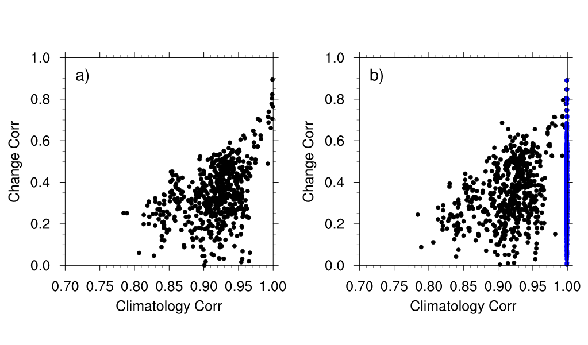

~0.10
Area-mean intermodel spread in dlnP remains nearly unchanged with BCSD
Model Development and Evaluation
Downscaling improves present-day bias but does not reduce intermodel spread in projected rainfall change because projection spread is tied to climatological-structure dependence.
~0.10
Area-mean intermodel spread in dlnP remains nearly unchanged with BCSD
16-20%
Spread reduction from simple model screening across downscaling products
GRL (2019)
Constraining climate model projections of regional precipitation change
Paper Citation
Zhang, B., and B. J. Soden, 2019: Constraining Climate Model Projections of Regional Precipitation Change. Geophysical Research Letters, 46, 10,522-10,531. https://doi.org/10.1029/2019GL083926
Do statistical downscaling and bias correction reduce uncertainty in future regional precipitation projections, and if not, can present-climate model performance be used to constrain that spread?
Intermodel Dependence and Spread
